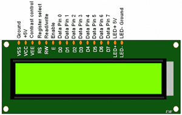
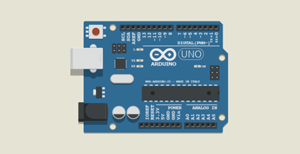
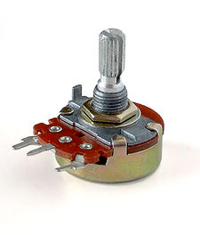
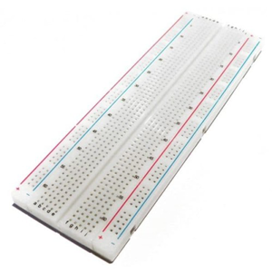
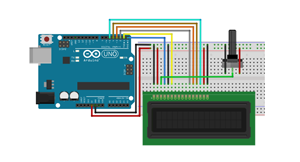

CARA PROGRAM LCD 16x2 MENGGUNAKAN ARDUINO

LCD (Liquid Crystal Display) 16x2
jenis media tampilan atau Dispaly dari bahan cairan kristal sebagai penampilan utama. LCD 16x2 dapat menampilkan sebanyak 32 karakter yang terdiri dari baris dengan tiap baris menampilkan 16 karakter. Pada Arduino untuk mengendalikan LCD Karakter 16x2 untuk librarynya yaitu LiquidCrystal.h.LCD ada bermacam-macam ukuruan 8x1, 16x1, 16x2, 16x4, 20x4.
Prinsip Kerja LCD
cara kerja dari LCD sebernanya cukup sederhana, yakni dengan memanfaatkan prinsip fisika terkait cahaya. Dikatakan bahwa cahaya putih terdiri dari ratusan cahaya dengan warna yang berbeda-beda. berbagai macam warna cahaya akan terlihat apabila cahaya putih mengalami refleksi atau perubahan arah sinar.

Arduino
pengendali mikro single-board yang bersifat open-source. dirancang untk memudahkan penggunaan elektronik dalam berbagai bidang. Hardware dalam arduino memiliki prosesor atmel AVR dan menggunakan software dan bahasa sendiri
Prinsip Kerja Arduino
Arduino merupakan Board Insturmen Elektronik yang tersusun dari Rangkain Perangkat pendukung Chip Mikrokontroler yang ditanamkan didalam sebuah Program. otak dari Arduino sendiri ialah Mikrokontroler yang tertanam pada setiap serinya. Setiap jenis Arduino menggunakan Mikrikintroler yang berbeda sesuai dengan kebutuhannya masing-masing

Potensiometer
Salah satu jenis Resistor yang Nilai Resistansinya dapat diatur sesuai dengan kebutuhan Rangkaian elektronika ataupun kebutuhan pemakainya. Potensiometer merupakan Keluarga Resistror yang tergolong dalam Kategori Variable Resistor. Secara struktur, Potensiometer terdiri dari 3 kaki Terminal dengan sebuah shaft atau tuas yang berfungsi sebagai pengaturnya
Prinsip Kerja Potensiometer
sebuah Potensiometer (POT) terdiri dari sebuah elemen resistif yang membentuk jalur (track) dengan terminal di kedua ujungnya. Sedangkan terminal lainnya (biasanya berada di tengah) adalah Penyapu (Wiper) yang dipegunakan untuk menentukan pergerakan pada jalur elemen resistif (Resistive). Pergerakan Penyapu (pada jalur Elemen Resistif inilah yang mengatur naik-turunya Nilai Resistansi sebuah Potensiometer.

Breadbord
Sejenis papan roti yang biasanya digunakan untuk membuat Prototype Rangkaian Elektronik. Beberapa orang kadang menyebutkanya Project Board atau bahkan Protoboard (prototype Board).Biasanya papan Breadboard ini digunakan untuk membuat rangkaian Elektronik sementara untuk tujuan uji coba atau prototype
Prinsip Kerja Breadbord
Papan Breadboard bisa dideskripsikan sebagai papan yang memiliki lubang koneksi bedasarkan pola tertentu.Untuk menghubungkan antara satu lubang dengan lubang yang lain, maka dibagian bawah lubang tersebut terdapat logam konduktor Listrik yang diposisikan secara Khusus. ini berguna untuk memudahkan pengguna dalam membuat rangkaian
Ok Guys. saya tau kamu pasti sudah menunggu untuk postingan ini.Untuk Teman-teman yang yang sudah mempunyai Alatnya,Bisa mencoba Program ini
Alat Yang Dibutuhkan
- Arduino
- Potensiometer
- Breadbord
- Bread Board
- Kabel Jumper Secukupnya
Rangkaian Seperti Gambar Dibawah ini

untuk konfigurasi pinnya mari kita lihat tabel berikut ini.
| # | Pin LCD | Pin Arduino | Pin Potensiometer |
|---|---|---|---|
| 1 | Pin 1(VSS) | GND | - |
| 2 | Pin 2(VDD) | +5V | - |
| 3 | Pin 3(VO) | - | OUTPUT | 4 | Pin 4(RS) | RX0 | - |
| 5 | Pin 5(RW) | GND | - |
| 6 | Pin 6(E) | TX1 | - | 7 | Pin 7(DO) | - | - |
| 8 | Pin 8(D1) | - | - |
| 9 | Pin 9(D2) | - | - | 10 | Pin 10(D3) | - | - |
| 11 | Pin 11(D4) | Pin 2 | - |
| 12 | Pin 12(D5) | Pin 3 | - | 13 | Pin 13(D6) | Pin 4 | - |
| 14 | Pin 14(D7) | Pin 5 | - |
| 15 | Pin 15(A) | +5V | - | 16 | Pin 16(K) | GND | - |
| 17 | - | GND | GND |
| 18 | - | +5V | INPUT |
contoh program
// include the library code
#include LiquidCrystal.h // memasukan library untuk lcd
LiquidCrystal lcd (0,1,2,3,4,5) pendefinisian pin
int data=100; // variable data
void setup() {
set up the LCD's number of columns and rows:
lcd.begin(16, 2); // inisialisasi lcd 16x2
}
void loop() {
lcd.clear(); //mengosongkan karakter pada LCD dahulu
lcd.setCursor(0,0); //atur kursor pada kolom ke 0 dan baris ke 0
lcd.print(" Hello World"); //menampilkan karakter Hello World
lcd.setCursor(0,1); //atur kursor pada kolom ke 0 dan baris ke 1
lcd.print("Data: "); //menampilkan karakter Data:
lcd.setCursor(6,1); //atur kursor pada kolom ke 6 dan baris ke 1
lcd.print(data); //menampilkan nilai variabel data
delay(1000); //digunakan untuk menahan program yang sedang berjalan selama 1000 ms atau 1 detik